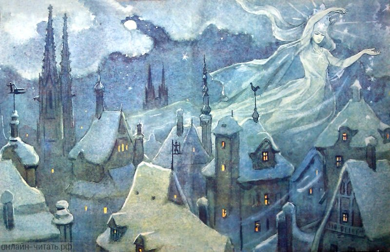
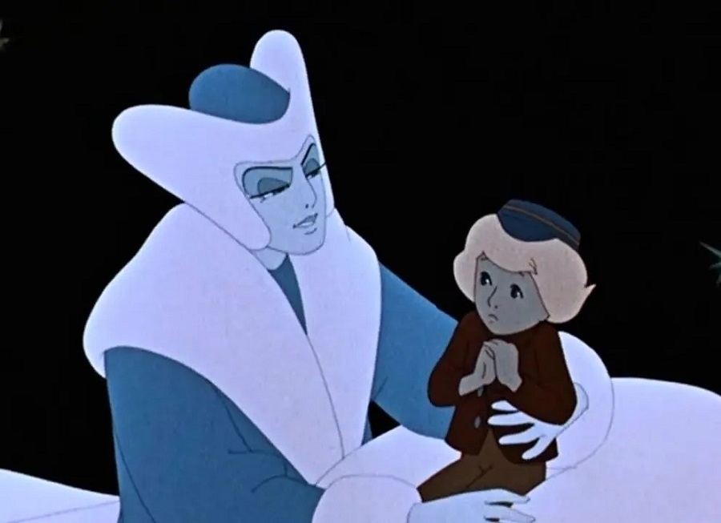
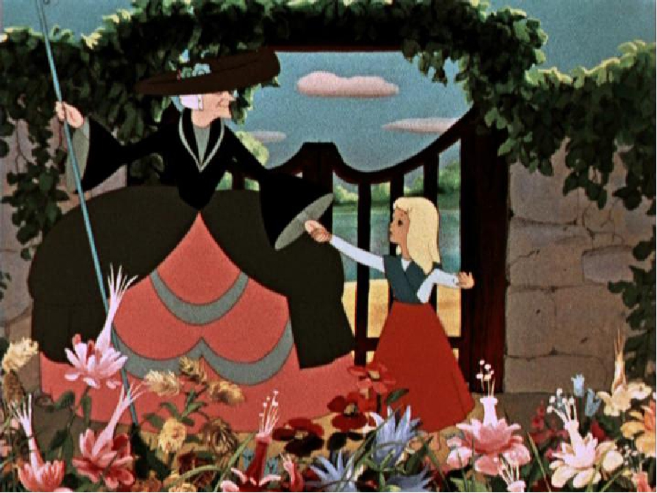
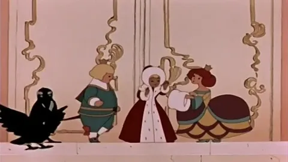
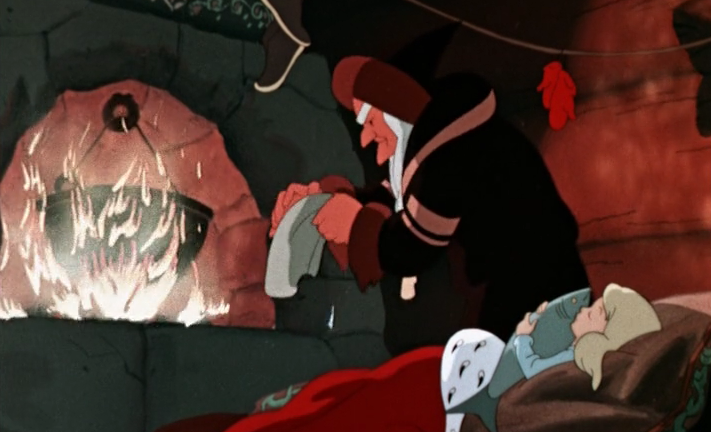
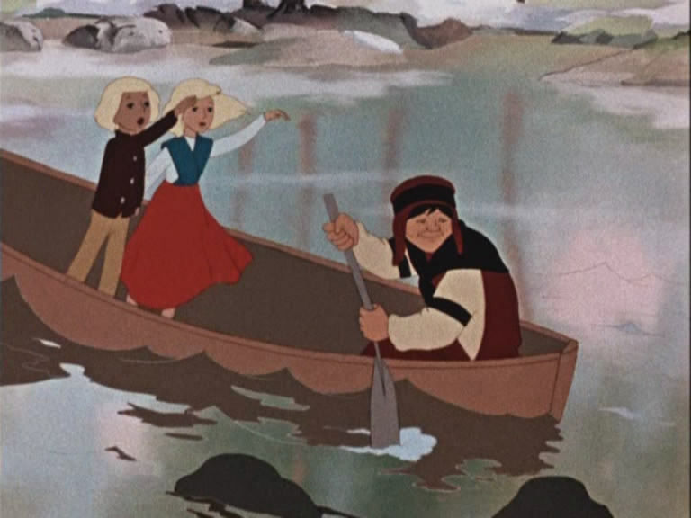

1.About the Mirror and Its Pieces

An evil "troll," "actually the devil himself," makes a magic mirror that has the power to distort the appearance of things reflected in it. It fails to reflect all the good and beautiful aspects of people and things while it magnifies all the bad and ugly aspects so that they look even worse than they really are. The devil teaches a "devil school," and the devil and his pupils delight in taking the mirror throughout the world to distort everyone and everything. They enjoy how the mirror makes the loveliest landscapes look like "boiled spinach." They then want to carry the mirror into heaven with the idea of making fools of the angels and God, but the higher they lift it, the more the mirror grins and shakes with delight. It shakes so much that it slips from their grasp and falls back to earth where it shatters into billions of pieces — some no larger than a grain of sand. These splinters are blown around and get into people's hearts and eyes, making their hearts frozen like blocks of ice and their eyes like the troll-mirror itself, only seeing the bad and ugly in people and things.
2.A Little Boy and a Little Girl

Years later, a little boy, Kay, and a little girl, Gerda, live next door to each other in the garrets of buildings with adjoining roofs in a large city. One could get from Kay's to Gerda's home just by stepping over the gutters of each building. The two families grow vegetables and roses in window boxes placed on the gutters. Kay and Gerda have a window-box garden to play in, and they become devoted in love to each other as playmates. It was on a pleasant summer's day that splinters of the troll-mirror get into Kay's heart and eyes while he and Gerda are looking at a picture book in their window-box garden. Kay's personality changes: he becomes cruel and aggressive. He destroys their window-box garden, he makes fun of his grandmother, and he no longer cares about Gerda, since all of them now appear bad and ugly to him. The following winter he goes out with his sled to the market square and hitches it to a curious white sleigh carriage, driven by the Snow Queen, who appears as a woman in a white fur-coat. Kay is then taken to the Snow Queen's palace on Spitsbergen, near the North Pole where he is contented to live due to the splinters of the troll-mirror in his heart and eyes.
3.The Flower Garden of the Woman Who Knew Magic

The people of the city get the idea that Kay has been drowned in the river nearby, but Gerda, who is heartbroken at Kay's disappearance, goes out to look for him. She questions everyone and everything about Kay's whereabouts. Gerda offers her new red shoes to the river in exchange for Kay; by not taking the gift at first, the river seems to let her know that Kay is not drowned. Gerda next visits an old sorceress, who wants Gerda to stay with her forever. She causes Gerda to forget all about her friend and, knowing that the sight of roses will remind Gerda of Kay, the sorceress causes all the roses in her garden to sink beneath the earth. At the home of the old sorceress, a rosebush raised from below the ground by Gerda's warm tears tells her that Kay is not among the dead, all of whom it could see while it was under the earth.
4. The Prince and Princess

Gerda flees from the old woman's beautiful garden of eternal summer and meets a crow, who tells her that Kay – a young man who came from unknown lands - was in the princess's palace. The girl subsequently goes to the palace and meets the princess and her prince, who appears very similar to Kay. Gerda tells them her story and they try to help her in her quest by providing warm clothes and a beautiful coach.
5.The Little Robber Girl
While traveling in the coach Gerda is captured by robbers and brought to their castle, where she is befriended by a little robber girl, whose pet doves tell her that they had seen Kay when he was carried away by the Snow Queen in the direction of Lapland. The captive reindeer, Bae, tells her that he knows how to get to Lapland since it is his home. The robber girl, then, frees Gerda and the reindeer to travel north to the Snow Queen's palace.
6.The Lapp Woman and the Finn Woman

They make two stops: first at the Lapp woman's home and then at the Finn woman's home. The Finn woman tells the reindeer that the secret of Gerda's unique power to save Kay is in her sweet and innocent child's heart. After saying goodbye to the Finn, Gerda and the deer reach the kingdom of the Snow Queen. There they part — the girl must go on by herself.
7.What Happened at the Snow Queen's Palace and What Happened Afterward

Despite all difficulties Gerda reaches and enters the Snow Queen's palace, where she finds Kay alone, making attempt to form the word “eternity” (Danish: "Evigheden") with pieces of ice. The Snow Queen promised to release him from her power and give him a pair of skates. Gerda finds him, runs up to him, and weeps warm tears on him, which melt his heart, burning away the troll-mirror splinter in it. Kay is saved by the power of Gerda's love. They managed to spell the very word Kay was trying to spell, "eternity." Even if the Snow Queen were to return, she would be obliged to free Kay. Kay and Gerda then leave the Snow Queen's domain with the help of the reindeer, the Finn woman, and the Lapp woman. They meet the robber girl and then came back to their native city, grown up and with love in their hearts.